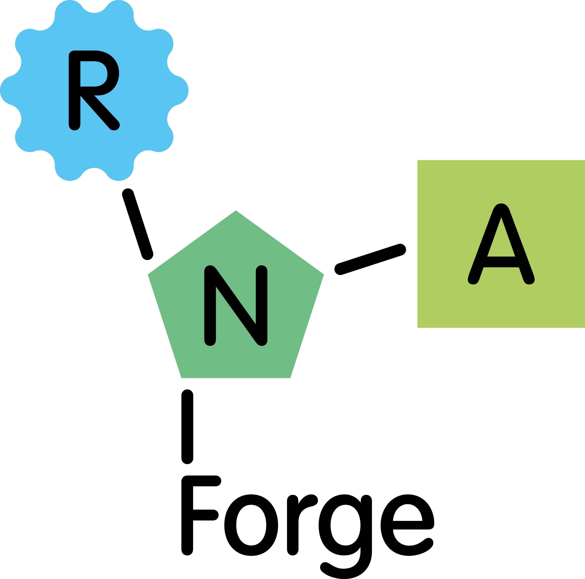

RNA manufacturing
Flexible RNA production and process development support for research and translational applications.

Optimised manufacturing, advanced analytics and process innovation for RNA therapeutics
RNA Forge is a University of Sheffield spinout founded in response to major manufacturing challenges emerging across the RNA therapeutics sector. We are developing RNAbox™, a modular, digitally enabled platform for flexible and scalable RNA medicine manufacturing.
Market context
The RNA therapeutics market is expanding rapidly beyond vaccines into areas including oncology, rare disease and gene editing, creating increasing demand for manufacturing technologies that are flexible, scalable and easier to integrate into evolving workflows.
A key part of our strategy is that we are not trying to replace existing manufacturing infrastructure overnight. Traditional batch systems are often fragmented and infrastructure-heavy, while highly integrated closed systems can create adoption barriers due to cost and lack of flexibility.
Our approach is intentionally modular, allowing progressive deployment into existing workflows and enabling customers to adopt individual technologies or increasing levels of integration over time.
We are also using manufacturing and analytical service activities to help inform platform development and customer priorities. This gives us direct insight into real manufacturing bottlenecks and workflow needs.
Capabilities
Flexible RNA production and process development support for research and translational applications.
Advanced analytical workflows providing deeper insight into RNA quality, integrity and process performance.
Developing next-generation manufacturing technologies to enable more integrated and scalable RNA production.
Why RNA Forge
We combine RNA production expertise with advanced analytical capabilities to provide deeper insight throughout development.
Our work is driven by the practical challenges of developing scalable, manufacturable RNA therapeutics.
Our modular approach is designed to complement existing infrastructure and support progressive adoption rather than require complete replacement of current workflows.
Our service activities keep RNAbox development connected to real manufacturing bottlenecks, customer priorities and workflow constraints.
Start a conversation
Speak with RNA Forge about off-the-shelf mRNAs, custom manufacturing, analytical services or modular RNAbox technology development.